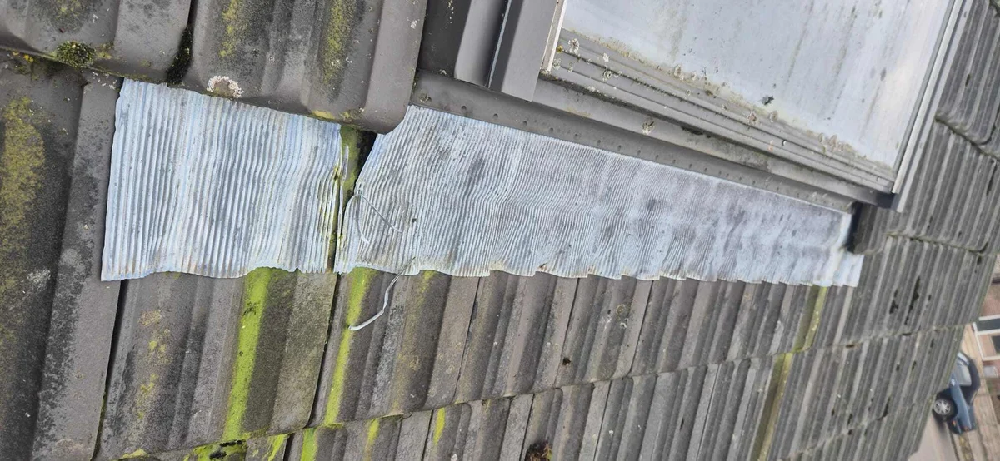
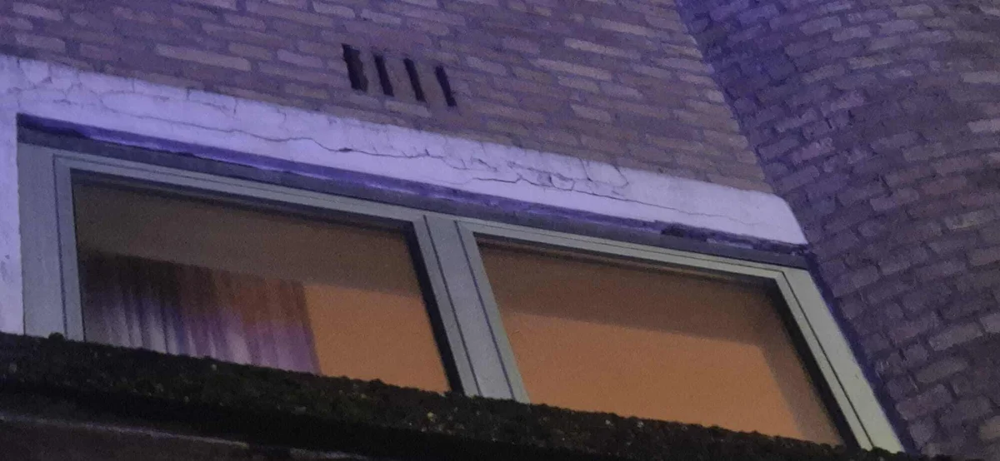

Welke loodafwerking is nodig op uw dak?
Loodwerk beschermt kwetsbare aansluitingen: schoorsteen, dakkapel, dakraam, kozijn en spouw. Als lood scheurt, loskomt of verkeerd is aangebracht, ontstaat vaak lekkage. Deze keuzehulp wijst u naar de juiste loodpagina.

Gebruik deze pagina als keuzehulp: herken eerst uw situatie, kies daarna de route die technisch het beste past. Twijfelt u? Dan is inspectie of lekkage opsporen verstandiger dan direct repareren.
Wat herkent u aan uw dak?
Kies het signaal dat het dichtst bij uw situatie komt. U ziet direct welke dienst of vervolgstap logisch is.
Lood rond schoorsteen is slecht
Kies schoorsteenlood, eventueel spouwlood bij diepere aansluiting.
Lekkage rond dakkapel
Vaak zit het in loodslabben of de aansluiting met het dak.
Dakraam lekt aan de onderzijde of zijkant
Dakraamlood of aansluiting kan verouderd zijn.
Vocht bij kozijn of geveldetail
Kozijnlood kan verkeerd liggen, gescheurd zijn of ontbreken.
Trapsgewijs lood bij hellend metselwerk
Bij aansluiting langs schuin dakvlak is trapsgewijs lood vaak nodig.
U weet niet welk looddetail lekt
Laat eerst de route van het water bepalen.
Welke pagina past bij uw situatie?
Onderstaande routes helpen bezoekers direct naar de juiste detailpagina.
Daklood vervangen
Algemene loodvervanging bij dakdetails.
Schoorsteenlood vervangen
Bij lekkage rond schoorsteen.
Dakkapel lood vervangen
Bij drupsporen of lekkage rond dakkapel.
Dakraamlood vervangen
Bij lekkage rond dakraam en raamkozijn.
Kozijnlood vervangen
Bij vochtproblemen rond gevel- of kozijnlood.
Trapsgewijs lood vervangen
Bij schuine aansluitingen langs metselwerk.
Waar u op kunt letten

Dakraamlood: controleer of de aansluiting rondom het dakraam nog waterdicht aansluit.

Kozijnlood: een correcte aansluiting voorkomt dat regenwater achter het kozijn trekt.
Veelgestelde vragen
VraagKan lood worden gerepareerd in plaats van vervangen?▾
Soms tijdelijk, maar gescheurd of verkeerd aangebracht lood komt vaak terug. Vervangen is meestal duurzamer.
VraagWaarom is loodwerk zo vaak oorzaak van lekkage?▾
Omdat lood precies op kwetsbare overgangen ligt. Beweging, wind, veroudering en verkeerde overlap zorgen snel voor waterinloop.
VraagWelk looddetail moet ik kiezen?▾
Kies op basis van de plek: schoorsteen, dakkapel, dakraam, kozijn of trapsgewijze aansluiting. Bij twijfel is opsporen veiliger.
Nog niet zeker? Kies dan niet op basis van een losse foto of vochtplek. Bel ons of vraag een gratis inspectie aan, dan bepalen we welke route technisch logisch is.